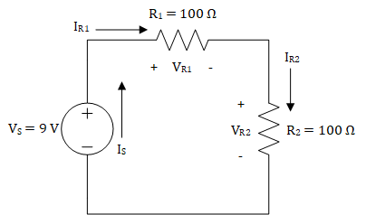
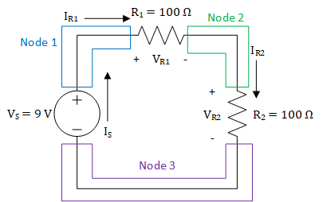
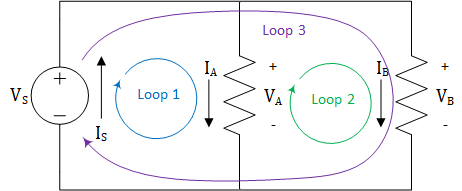
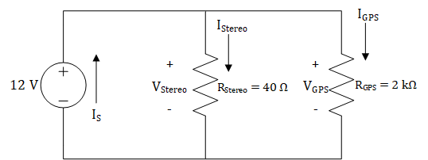

Lesson 2 – KVL and KCL#
Learning Objectives covered in this Lesson#
I can calculate the voltages, currents, and power associated with devices in a simple DC-powered circuit using tools such as KVL, KCL, voltage and current dividers, Ohm’s Law, and the power equation.
Motivation#
As we add more devices to a circuit, interesting and useful things begin to happen. However, circuits with more devices are much more complex and cannot be solved with Ohm’s Law and the Power Equation alone.[1] To demonstrate this, let’s start by looking at one of the circuits we analyzed last lesson.

Figure 1: A simple circuit consisting of one voltage source and one resistor
When analyzing the circuit shown in Figure 1, we can say that the voltage between the positive (+) and negative (-) terminals of the voltage source must differ by 9 V. We can see this one of two ways: one way from the perspective of the voltage source and the other way from the perspective of the circuit. From the perspective of the voltage source, the voltage source forces there to be 9 V voltage rise between the negative and positive terminals, and from the perspective of the circuit, the circuit must have a 9 V drop between the positive and negative terminals. We explained this last lesson by saying that the higher pressure will be on the positive terminal and the lower pressure will be on the negative terminal. Nevertheless, we see that the voltage provided by the voltage source must be dropped across the rest of the circuit, which is only a resistor in this case. Now that we know the voltage drop across the 100 Ω resistor is 9 V, we can use Ohm’s law to find the current through the resistor, which is 90 mA. At this point, we know \(V_{S},\ V_{R},\ and\ I_{R}\), but we do not know \(I_{S}\). Unfortunately, the ECE tools we’ve learned up until this point, Ohm’s Law and the Power Equation, cannot help us find \(I_{S}\). To find that, we need Kirchhoff’s Current Law.
When we said that there must be a 9 V drop across the circuit, we didn’t fully explain why this occurs. Due to the law of conservation of energy, any voltage rise must be accompanied by voltage drops across the devices in a circuit. More specifically, the sum of these voltage drops must equal the voltage rise. For the circuit in Figure 1, we can say that the voltage drop across the resistor is the same as the voltage rise because we only have one resistor. However, in circuits with more than one resistor, we have to sum the voltage drops. Consider the circuit in Figure 2. If we knew that \(V_{R2}\) was equal to 4.5 V, we could use Ohm’s Law to solve for \(I_{R2}\), but we cannot use Ohm’s Law or the Power Equation to solve for \(V_{R1}\). For that, we need to use Kirchhoff’s Voltage Law. Kirchhoff’s Voltage Law tells us how to sum voltage drops, and by summing voltage drops, we can solve for \(V_{R1}\). Interestingly, we can also use Kirchhoff’s Current Law to solve for \(V_{R1}\), but we will wait a bit to explain that.

Figure 2: A circuit consisting of one voltage source and two resistors
Kirchhoff’s Laws#
Before getting into Kirchhoff’s Voltage Law (KVL) and Kirchhoff’s Current Law (KCL), we need to cover the fundamentals of these laws and some definitions. Kirchhoff’s Laws are derived from conservation laws. KVL is derived from the law of conservation of energy. The law of conservation of energy tells us that energy cannot be created or destroyed and can only be transformed from one type to another, such as gravitational potential energy to kinetic energy or chemical energy to kinetic energy. From last lesson, we know that voltage is the amount of work (or energy) per charge, so we can infer that KVL will explain how the voltage is conserved in a circuit. KCL is derived from the law of conservation of charge. The law of conservation of charge tells us that charge cannot be created or destroyed, meaning that the amount of charge flowing into a region will be equal to the amount of charge flowing out of that region. Since we know that the flow of charge (electrons) is equal to the current, we now know that current flowing into a region must be conserved.
KVL and KCL are concerned with how the devices in a circuit are arranged. In contrast to Ohm’s Law and the Power Law, KVL and KCL do not tell us anything about the individual devices. Instead, they tell us how the connections between devices impact the voltage across our devices (KVL) and the current through our devices (KCL). In order to use KVL and KCL, we must have a common terminology for these connections, and we refer to these connections in terms of nodes and loops in circuits.
A node is a wire, or other electrical conductor, that connects two or more electrical devices. Nodes are just the connections between devices, so if you have found a junction between devices, then you have found a node. In some circuits, a node can stretch the length of the circuit, so don’t let that be a source of confusion. The circuit in Figure 1 has two nodes: one at the top connecting the positive terminals of both devices and one at the bottom connecting the negative terminals of both devices. The circuit in Figure 2 has three nodes, and Figure 3 shows these nodes.

Figure 3: Nodes in a circuit with one voltage source and two resistors
It’s important to be able to identify the nodes in various circuits, regardless of the complexity of those circuits. The circuit shown in Figure 4 has one voltage source and three resistors connected in a parallel configuration.[2] As shown in Figure 5, the circuit only has two nodes: one on the top and one on the bottom. Remember, a node is just a conductor that connects multiple devices, and while it may seem odd to have a node that stretches the entire circuit, this is completely acceptable.

Figure 4: A parallel circuit with one voltage source and three resistors

Figure 5: Nodes in a parallel circuit with one voltage source and three resistors
A loop is a closed path where, starting at an arbitrary node, you can trace a path back to the original node without passing through any other nodes more than once. We use the term “closed path” to denote a path around a circuit that is completely enclosed by wires and starts and ends at the same location. In this class, we will trace loops in a clockwise manner, and oftentimes, we will start at the node above the voltage source. The circuit shown in Figure 2 only has one loop, and this is shown in Figure 6.

Figure 6: Loop for a circuit with one voltage source and two resistors
The loop shown in Figure 6 starts at node 1 above the voltage source then passes through \(R_{1}\), node 2, \(R_{2}\), node 3, and the voltage source before returning to node 1. We only have one loop because there is only one distinct closed path through this circuit. Unfortunately, a circuit with only one loop can only teach us so much about loops. Figure 7 shows a circuit that is very similar to the circuit in Figure 4, with the exception that the right-most resistor has been removed. We can see that the circuit has three loops: one in each “window” of the circuit and one around the entire circuit. It is very easy to forget about the loop around the outside of the circuit, so remember that loops are not restricted to the “windows” in a circuit. As we get to more complex circuits, we will see that a loop can circle around two or more “windows”.

Figure 7: Loops in a parallel circuit with one voltage source and two resistors
Now that we have an understanding of nodes and loops in a circuit, we’ll get into the details of KVL and KCL.
Kirchhoff’s Voltage Law (KVL)#
As stated earlier, KVL is based on the law of conservation of energy. We know that voltage is energy per charge, and KVL tells us that voltages around loops in a circuit are conserved. Put another way, voltage rises must be accompanied by voltage drops. As we trace around a loop in our circuit, the voltage rises and voltage drops must sum to zero. Another way to put this is “what goes up, must come down.”
Key Concept: KVL states that all the voltages around a loop must add up to exactly zero.
As we trace around a loop in our circuits, we need an easy way to know whether the voltage drops or rises across a device. To that end, we label each of our devices with a plus (+) and a minus (-) on either end to designate the voltage across the device. As we move clockwise through a loop, moving from a minus to a plus results in a voltage rise. Similarly, moving from a plus to a minus results in a voltage drop.
KVL Analysis I
We will use the circuit in Figure 8 to explain how KVL may be used in circuit analysis. First, we begin by identifying the nodes and loops. As you can see from Figure 8, there are four nodes and only one loop in the circuit.

Figure 8: Nodes and loops for a series circuit[3] with one voltage source and three resistors
KVL is primarily concerned with the loops in a circuit; the nodes are only used as a means to help identify the loops. Each loop in a circuit can generate only one KVL equation. Since there is only one loop in the circuit in Figure 8, KVL will only give us one equation to help analyze this circuit. If we start in the lower left-hand corner and move clockwise along the loop, the first thing we come to is a voltage source. Since we move from a minus (-) to a plus (+) through the source, Vs, it is considered a voltage rise. We will consider voltage rises as “positive voltages” or a gain in voltage, so we will place a positive sign in front of them in the KVL equation. Continuing around the loop, we come to three resistors, each of which drops the voltage by VA, VB, and VC, respectively. We will consider voltage drops as “negative voltages” or a loss of voltage, so we will place a negative sign in front of these voltages. Applying KVL to this circuit gives us the following KVL equation:
Another way to view KVL is to say that for any loop in a circuit:
Total Voltage Rises = Total Voltage Drops.
This points to something we were saying earlier: KVL is just a specialized application of the conservation of energy. So, if we apply this to the circuit above, we get:
This equation is mathematically identical to the first one, but it is usually easier to use. The very important principle to remember about KVL is that it only applies to loops in a circuit.
For example, if we were using a 9 V source, then the sum of the voltage drops must equal the 9 V increase from the source. In other words,
If we knew VA = 2 V and VB = 4 V, then VC would have to equal 3 V due to the following:
KVL Analysis II#
Now, let’s apply KVL to the circuit in Figure 7. Since there are three loops in the circuit, we know there must be three KVL equations. Traversing the loops in a clockwise manner and following our sign convention for voltage rises and drops gives:
The leftmost equation is for loop 1, the middle equation is for loop 2, and the rightmost equation is for loop 3. The interesting result is all of these equations simplify to the identity:
Again, if we were using a 9 V source, this would mean the full 9 V drops across each of the resistors. If we were to add a fourth or a fifth or a twentieth resistor in the same manner (known as parallel – more on this next lesson), each additional resistor would also get the full 9 V.
Example Problem 1: A 9V battery is used to power the circuit below. The current through R1 is 2 mA and the output voltage, Vout, is 2 V. Find the voltages VR and VP.

Understand: We have a circuit with four nodes, three loops, a voltage source, and several resistors.
Identify:
Knowns: We know 2mA is flowing through R1 (which has a resistance of 1.5kΩ) and the voltage Vout is 2V. We also know the source voltage is 9V.
Unknowns: VR and VP. We also don’t know the resistance values for either of those resistors.
Assumptions: None.
Plan: Since the circuit involves mostly voltages, we know we can use KVL to try and find the unknown voltages. We see there are three loops; therefore, we can find three KVL equations. However, since we don’t have the voltage values across all the resistors, we will have to use Ohm’s law to find the voltage drop V1.
Solve: First, we apply KVL around the loop, L1,
However, we don’t know V1 yet. Since we know both the resistance of and the current through the 1.5 kΩ resistor, we can find the voltage across it using Ohm’s Law:
This allows us to easily find VR:
To find VP, we can use the KVL equation from one of the other loops. We’ll use the outside loop, which contains the source, the two resistors on top, and the rightmost resistor. This gives us:
Answer: VR = 6 V and VP = 4 V.
Kirchhoff’s Current Law (KCL)#
KCL is rooted in the law of conservation of charge. Since current is the flow of charge (specifically electrons), KCL tells us that currents entering nodes must be conserved. This means that the current entering a node must be equal to the current leaving a node. In other words, what goes into a node must also come out of that node. Typically, we will phrase this slightly differently by saying that the sum of all currents entering and leaving a node must equal zero.
Key concept: KCL states that the sum of all currents entering and leaving a node is exactly zero.
Before we demonstrate KCL, let’s take a look at how currents are labelled in circuits. We label currents as emerging from the positive terminal of voltage sources and entering the positive terminal of resistors. This reflects our definition of current, which says that the current flows from the positive terminal to the negative terminal of voltage sources. Additionally, this convention helps express the fact that voltage sources provide power while the resistors dissipate it.
Whereas KVL is concerned with loops, KCL is concerned with nodes. Applying KCL to a circuit gives one KCL equation for each node, and when writing those equations, we put a positive sign in front of currents that enter nodes and a negative sign in front of currents that leave nodes. Think of it this way: currents entering nodes add charge to the node whereas currents leaving nodes subtract (or remove) charge from the node. The following examples will demonstrate this.
KCL Analysis I#
Let’s apply KCL to the circuit in Figure 2. The first step is to identify all of the nodes in the circuit. Fortunately, the nodes are identified in Figure 3, so we know that there are three nodes in the circuit. Starting with node 1 in the top left-hand corner, we see that the only current entering the node comes from the source, IS, while the only current leaving the node is the one entering the first resistor, IR1. Therefore, in our KCL equation for node 1, IS will be positive, and IR1 will be negative. Looking at node 2, we can see that IR2 leaves the node, but it may be difficult to see which current enters the node. Knowing that currents travel through devices can shed some light on this. The current IR1 travels through \(R_{1}\) and exits the negative terminal of \(R_{1}\), meaning it enters node 2. The same thing happens with node 3: IR2 enters the node and IS leaves it. If we write an equation for each of these nodes, we get:
These four equations can be combined into the following identity:
This identity demonstrates an important point: when devices are placed one after another (known as series – more on this next lesson), they have the same current flowing through them.
KCL Analysis II#
The current flow in the circuit shown in Figure 4 is a bit more complicated than the current flow in Figure 2, but as we can see from Figure 5, we only have two nodes to deal with.
Applying KCL at node 1, we find that only one current, \(I_{S}\), enters the node and three currents, \(I_{A},\ I_{B},\ and\ I_{C}\), leave the node. This gives us the KCL equation:
Looking at node 2, we see that everything is flipped: \(I_{S}\) leaves the node and \(I_{A},\ I_{B},\ and\ I_{C}\) enter the node. This results in the following KCL equation.
This is the same equation except the signs are reversed. If we wished, we could simplify either of these equations into:
For any node in a circuit, KCL can also be written as
Total Current In = Total Current Out
By way of example, let’s power the circuit in Figure 4 with a 9-V source. If we measured the currents through each of the resistors to be IA = 1 A, IB = 3 A, and IC = 2 A, then our voltage source would have to provide 6 A of current due to the following:
Circuit Analysis and Examples#
KVL and KCL provide sets of equations that describe the relationships of voltages and currents within a circuit. They are powerful tools, and when combined with Ohm’s Law and the power equation, they can be used to completely analyze any resistive circuit. The following example problems show how this process works.
Example Problem 2: A 9-V battery is used to light two light bulbs, modeled as 45-Ω resistors in the circuit below. How much current flows through each bulb?

Understand: We have a source VS that is feeding two resistors R1 and R2. The circuit has one loop and three nodes.
Identify:
Knowns: VS, R1, and R2
Unknowns: The currents IS, I1, and I2; the voltages V1 and V2.
Assumptions: The light bulbs can be modeled as resistors.
Plan: We need to find the currents through the two bulbs, labeled as I1 and I2. We will first write the KCL equations at each node, then use KVL to find the relationship between the voltages in the circuit. Finally, we will use Ohm’s law to tie the KCL and KVL equations together.
Solve: Applying KCL to the nodes gives us the following identity:
In other words, the same current flows through every component in the circuit (reference “KCL Analysis I” earlier if this step confused you).
Since this circuit contains one closed loop, we can apply KVL to this loop to find the following equation:
Since we have no way to solve for the voltages or currents directly, we will use Ohm’s Law to tie the two equations together. For each of the resistors, Ohm’s Law tells us:
If we substitute these into the KVL equation, we get:
We know from KCL that all of the currents are the same in the circuit \((I_{S} = I_{1}{= I}_{2})\). Therefore, this equation can be simplified to:
After using some algebra, we solve to find the source current, IS:
\(I_{S} = \ \frac{9\ V}{90\ \mathrm{\Omega}} = \ 100 \ mA\)
Since all of the currents are the same, we have that \(I_{S} = I_{1}{= I}_{2} = 100\ mA\).
Answer: The 9-V battery provides 100 mA of current to each bulb.
Example Problem 3: A car stereo (modeled as a 40-Ω resistor) and a GPS navigation system (modeled as a 2-kΩ resistor) are connected to a 12-V car battery, shown in the circuit below. Determine how much power is consumed by each device and how much power the source provides.

Understand:
Knowns: VS, RStereo, and RGPS
Unknowns: The currents IS, IStereo, and IGPS; the voltages VStereo and VGPS. We are required to find the power consumed by each device and the power produced by the voltage source.
Assumptions: None.
Plan: We must first find the voltage across or the current through each resistor before we can use the power equation to find the power consumed. Since we have three loops, KVL will give us three equations. Similarly, the two nodes in the circuit will give us two KCL equations. Once we have the voltage across or the current through each component, we can use the Power Equation, in concert with Ohm’s Law, to determine how much power each component consumes. In order to find the power that the source provides, we will need to determine the total current provided by the source (IS). Once we have this, we can use the Power Equation to find the power provided by the source.
Solve: Since we do not know any of the currents, KCL will not help us determine the current through each resistor. However, we are given the voltage provided by the source, so we can use KVL to solve for the voltages. The KVL equations for this circuit are shown below.
We can simplify these equations into the following equation:
From this, KVL tells us that the voltage drop across each device is 12 V (reference the earlier section titled “KVL Analysis II”). Now, we can use the Power Equation and Ohm’s Law to solve for the power consumed by each device.
Next, we need to find the current provided by the source. To start, we will find the KCL equation for the top node. As mentioned earlier in the section titled “KCL Analysis II”, both nodes will have equivalent KCL equations, so only one equation is needed.
We can use Ohm’s Law in concert with our KCL equation to solve for the source current, IS.
Now that we know both the voltage and current provided by the source, we can solve for the power provided by the source.
Looking back at the power consumed by each device, we can see that the total power consumed by both devices is equal to \(3.672\ W\) – exactly the same as the power provided by the source!
Answer: The stereo consumes 3.6 W while the GPS consumes 72 mW. The source provides 3.672 W.
Conservation of Power#
The last example problem touched on an important concept: power is conserved in circuits. This means that the power provided by the source must always be equal to the power consumed by the devices. You can use this principle to check your work. If, at the conclusion of your circuit analysis, you find that the power provided by the source is not equal to the power consumed by the devices, then you did something wrong in your analysis. The engineering method, most notably the “Test and Evaluate” and “Reflection” steps, requires that we check our work, so make a habit out of checking your work in this class!